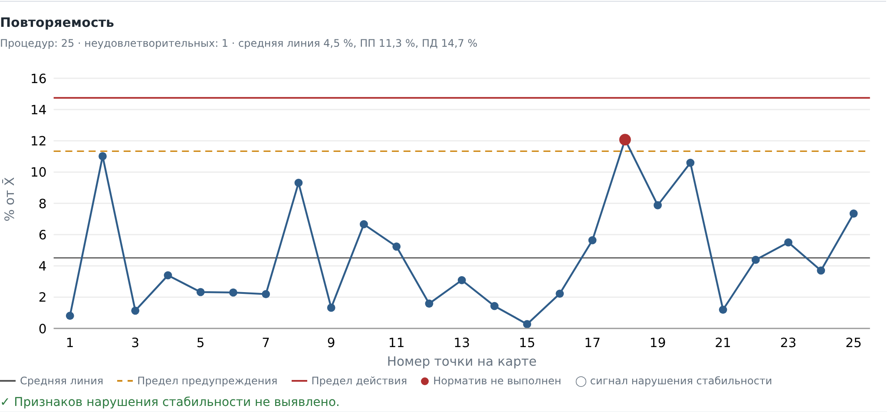

ГОСТ ISO/IEC 17025-2019 · Критерии аккредитации
Подготовим лабораторию к аккредитации и подтверждению компетентности
Документация системы менеджмента, внутрилабораторный контроль, верификация методик и аудит перед экспертизой. Специализация — лаборатории воды, сточных вод и природных объектов.
- Практический опыт: организация лаборатории и прохождение аккредитации
- Работаем удалённо по всей России
- Цена фиксируется до начала работ, NDA по запросу
Кому помогаем
Создаём систему менеджмента и пакет документов с нуля, готовим к выездной экспертизе.
Проверяем, что изменилось с прошлой экспертизы, и закрываем пробелы до подачи заявления.
Верификация новых методик, оценка неопределённости, обновление документов.
Анализ несоответствий, план корректирующих действий и ответы эксперту.
Лаборатории водоканалов, промышленных предприятий, экологические и санитарные лаборатории.
Услуги
Проверяем документы и записи лаборатории на соответствие ГОСТ ISO/IEC 17025-2019 и Критериям аккредитации. Результат — отчёт с перечнем несоответствий и приоритетами.
Срок: от 5 рабочих дней
Руководство по качеству, процедуры, рабочие инструкции и формы записей — под реальные процессы вашей лаборатории, а не «шаблон из интернета».
Срок: от 2 недель
План-график ВЛК, расчёт нормативов, контрольные карты Шухарта по РМГ 76-2014, годовой отчёт о ВЛК.
Срок: от 1 недели
Программы и отчёты о верификации, оценка показателей точности и неопределённости измерений.
Срок: по объёму области
Подготовка к выездной экспертизе, разбор замечаний, план корректирующих действий и ответы эксперту.
Срок: на время процедуры
Консультации, актуализация документов при изменениях требований, контроль сроков ВЛК и МСИ.
Помесячно
Стоимость зависит от объёма области аккредитации и состояния документов. Назовём фиксированную цену после бесплатной оценки.
Как работаем
- Заявка
Пишете на почту или в Telegram: тип лаборатории, область, что предстоит — аккредитация, ПК или расширение.
- Бесплатная оценка
Созвон на 30 минут или переписка. Смотрим документы, если вы готовы их показать, и определяем объём работ.
- Фиксированная цена
Согласуем состав работ, сроки и цену. При необходимости подписываем соглашение о конфиденциальности.
- Работа и сдача
Работаем удалённо, сдаём результат поэтапно. Правки по замечаниям эксперта — в рамках работы.
Инструменты для лабораторий
Сервисы ЛабКомпас
Вопросы по разделам ГОСТ ISO/IEC 17025: процент готовности и список того, что доработать до экспертизы.
Оперативный контроль и карты Шухарта по РМГ 76-2014. Данные не покидают ваш компьютер.
Сроки поверки, калибровки и аттестации, напоминания на почту, график в Excel. До 10 единиц — бесплатно.
Бесплатный инструмент
Калькулятор ЛабКомпас.ВЛК
Оперативный контроль повторяемости, прецизионности и точности, контрольные карты Шухарта и поиск признаков нарушения стабильности — по РМГ 76-2014.
- Вставьте результаты из Excel — расчёт и карты сразу
- Отчёт в PDF в один клик
- Расчёты выполняются в браузере: данные лаборатории никуда не отправляются

Частые вопросы
Вы гарантируете прохождение аккредитации?
Нет, и честный консультант не может это гарантировать: решение принимает Росаккредитация по результатам экспертизы. Мы гарантируем, что документы и записи будут соответствовать требованиям, а замечания эксперта по нашей части работы мы устраним без доплаты.
Вы работаете только с лабораториями воды?
Основная специализация — вода, сточные воды и природные объекты: здесь мы знаем и методики, и типичные замечания экспертов. Общие требования системы менеджмента одинаковы для всех лабораторий, поэтому документацию СМК готовим и для других профилей.
Как обеспечивается конфиденциальность?
Документы лаборатории используем только для вашей работы, по запросу подписываем соглашение о неразглашении. Калькулятор ВЛК работает целиком в браузере и не передаёт данные на сервер.
Нужен ли выезд в лабораторию?
В большинстве случаев нет: работа с документами и консультации идут удалённо — по почте, в мессенджере и по видеосвязи.
Как оформляется оплата?
Договор и закрывающие документы с чеком. Оплата поэтапно: аванс и окончательный расчёт после сдачи этапа.
Вы связаны с Росаккредитацией?
Нет. ЛабКомпас — независимый консультант, не является органом по аккредитации и не участвует в проведении экспертиз.
Расскажите о вашей лаборатории
Опишите задачу в двух-трёх предложениях: тип лаборатории, область аккредитации и что предстоит. Ответим в течение одного рабочего дня.